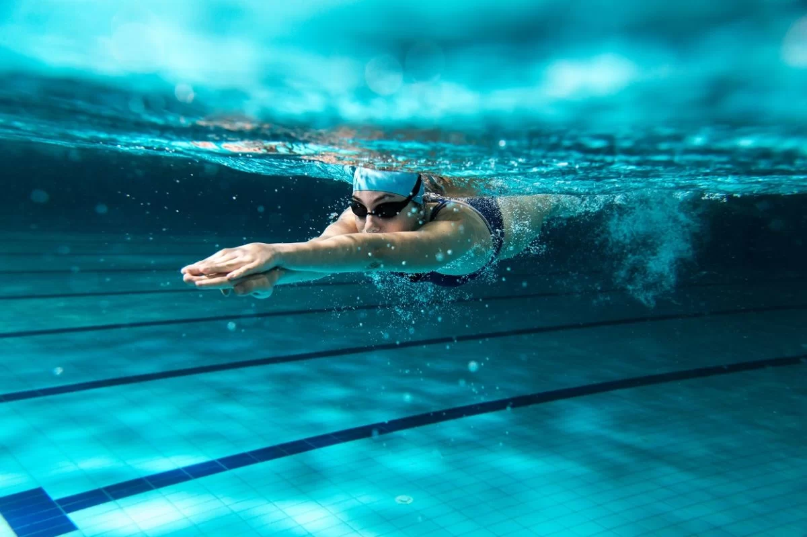

Praticar atividades físicas traz muitos benefícios para a saúde. Além disso, para algumas pessoas praticar atividades se torna um hobby
Voleibol (chamado frequentemente no Brasil de Vôlei e em Portugal de Vólei) é um esporte praticado numa quadra dividida em duas partes por uma rede, possuindo duas equipes de seis jogadores em cada lado. O voleibol foi originalmente chamado de Mintonette, devido à sua semelhança com o Badminton. Ele também tem alguns elementos de tênis e handebol e até beisebol porque no conjunto de regras original havia 9 entradas com três saídas (saques). O objetivo da modalidade é fazer a bola passar sobre a rede de modo a que a bola toque no chão dentro da quadra adversária, ao mesmo tempo que se evita que os adversários consigam fazer o mesmo. O voleibol é um desporto olímpico, regulado pela Fédération Internationale de Volleyball (FIVB).
Para ler mais sobre, clique AQUI
A natação é um esporte olímpico muito famoso, que contém como principais categorias:
Para ler mais sobre, clique AQUI
O basquetebol, popularmente conhecido como basquete (português brasileiro) ou básquete (português europeu)[nota 1], é um esporte coletivo inventado em 1891 pelo professor de educação física canadense James Naismith, na Associação Cristã de Moços de Springfield, em Massachusetts, nos Estados Unidos.[1] É disputado por duas equipes de 12 jogadores (cinco em quadra e sete reservas) que têm como objetivo passar a bola por dentro de uma cesta (ou aro) e evitar que a bola entre na sua cesta colocada nas extremidades da quadra, seja num ginásio ou ao ar livre. Os jogadores podem caminhar na quadra, desde que driblem (batam a bola contra o chão) a cada passo dado. Também é possível executar um passe, ou seja, passar a bola em direção a um companheiro de equipe.
O nome vem do inglês basketball, (Basket = Cesto, Ball = Bola, que literalmente se traduz em "bola de cesto", e do qual derivaria o termo "Bola ao Cesto" para designar o desporto, hoje em grande medida obsoleto). É um dos esportes mais populares do mundo.[2], sendo esporte olímpico desde os Jogos Olímpicos de Verão de 1936 em Berlim.
Para ler mais, clique AQUI